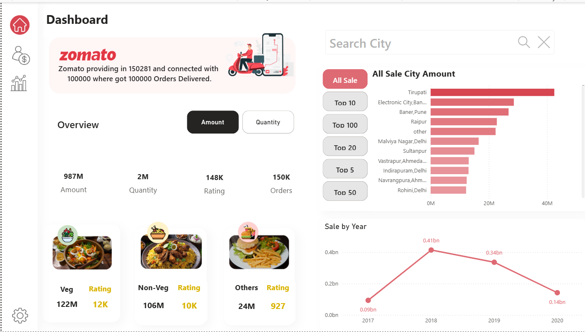

zomato Sales Analysis
An interactive Power BI dashboard built on six related Zomato tables: restaurants, menus, food, orders, order types and users. It shows how much sold, where it sold and how sales changed from 2017 to 2020, with buttons to switch views and rank cities.
Live Power BI report
The real report, embedded from Power BI Service. Click the buttons and visuals to explore it.
The dashboard
The overview page from Power BI. Toggle buttons switch between Amount and Quantity, and the city chart can show the Top 5, 10, 20, 50 or 100 cities.

Headline numbers
Sales by year
Top cities by sales
Figures are taken from the Power BI report. City values are approximate, read from the chart.
Key insights
2018 was the peak year
Sales grew more than 4×, from about 0.09bn in 2017 to 0.41bn in 2018, then fell to 0.34bn in 2019 and 0.14bn in 2020.
Tier-2 cities can lead
Tirupati is the #1 city by sales at over 40M, well ahead of metro areas like Electronic City (Bangalore) and Baner (Pune).
Veg edges out Non-Veg
Veg dishes bring in 122M vs 106M for Non-Veg, and Veg also scores higher on the ratings measure (12K vs 10K).
Huge order volume
150K orders and 2M items sold. On average each order holds about 13 items, which suggests group and family orders.
Demand fell after 2019
2020 sales were about a third of the 2018 peak. A drop that large is worth breaking down by city and restaurant to find the cause.
What to do next
Find out what drove the 2019–2020 decline, focus marketing on strong cities like Tirupati, and grow the Veg menu.
How I built it
1 · Data
- Six related Excel tables: food, menu, orders, orders_type, restaurant and users.
- Linked them in the Power BI data model so one dashboard can slice across all of them.
2 · Clean (Power Query)
- Data cleaning and transformation before modelling: types, blanks and duplicates.
3 · Measures (DAX)
- Business calculations for amount, quantity, ratings and orders.
- City ranking that switches between Top 5, 10, 20, 50 and 100.
4 · Design
- App-style layout with side navigation and Zomato's red brand colour.
- Buttons to switch views between Amount and Quantity.